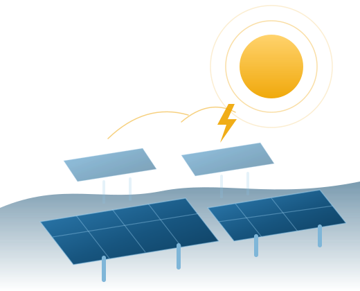

Energia rinnovabile,
prodotta in Piemonte.
SOLARMA S.n.c. produce e vende energia elettrica da fonte fotovoltaica attraverso la propria centrale di Peveragno, e affianca imprese e privati nella progettazione, nella realizzazione e nella gestione di impianti alimentati da fonti rinnovabili.

Un produttore indipendente che conosce gli impianti da dentro
Gestiamo in prima persona un impianto fotovoltaico connesso alla rete. La stessa competenza tecnica è disponibile per chi progetta, realizza o gestisce impianti da fonti rinnovabili, e per gli interventi di architettura nell’edilizia civile e industriale.
Produzione e vendita di energia
Energia elettrica da impianti fotovoltaici di proprietà, immessa in rete, con i rapporti contrattuali che ne derivano.
L’impianto →Progettazione e ingegneria
Studi di fattibilità, progettazione strutturale e impiantistica, direzione lavori e collaudo.
I servizi →Architettura
Nuove costruzioni, ristrutturazioni e recupero di edifici esistenti, dal progetto alla direzione dei lavori.
I progetti →Monitoraggio e sistemi IoT
Telecontrollo della produzione, reti di sensori e sistemi embedded: la competenza che applichiamo al nostro impianto, disponibile anche per impianti di terzi.
Le competenze →Gestione e manutenzione
Installazione, conduzione e manutenzione di impianti da fonti rinnovabili, per conto proprio e di terzi.
I servizi →Peveragno, Cuneo — in esercizio dal 2012
La nostra unità produttiva è una centrale elettrica fotovoltaica situata in via Boves 269 a Peveragno, nel cuore della provincia di Cuneo. È entrata in esercizio il 28 giugno 2012 ed è da allora il centro dell’attività della società.
- Impianto di proprietà, connesso alla rete di distribuzione
- Monitoraggio della produzione e manutenzione programmata
- Oltre un decennio di esercizio continuativo
Ogni kilowattora prodotto è un kilowattora non bruciato
L’energia solare è una risorsa locale, prevedibile e priva di emissioni in fase di esercizio. Produrla dove viene consumata riduce le perdite di rete e la dipendenza dalle importazioni di combustibili fossili.
- Generazione distribuita a chilometro zero, in provincia di Cuneo
- Nessuna emissione diretta di CO₂ durante l’esercizio
- Impianto integrato nel territorio, senza consumo di risorse idriche
- Componenti a fine vita gestiti attraverso le filiere di riciclo dedicate
Una struttura piccola, con responsabilità chiare
Esperienza sul campo
Un impianto di proprietà in esercizio continuativo dal 2012: conosciamo i costi reali di un ciclo di vita, non solo quelli di progetto.
Un ingegnere e un architetto
I due soci sono iscritti ai rispettivi ordini professionali: la parte strutturale e quella architettonica hanno ciascuna il proprio referente abilitato.
Interlocutore diretto
Nessuna catena di intermediari: si parla direttamente con chi decide, e chi decide è anche il professionista abilitato che firma il progetto.
Trasparenza
Dati societari, sede, cariche e attività sono pubblici e verificabili presso il Registro delle Imprese di Cuneo.
Un progetto fotovoltaico da valutare?
Scriveteci: rispondiamo con una valutazione preliminare onesta, anche quando la risposta è che l’intervento non conviene.